romanticism: 1830-1850
intro
just like neoclassicism, the romantic movement doesn't have a clear end date. some artists keep making romantic art after 1850.
romanticism started as a literary movement in germany, england and, of course, france. people expressed their individualism, emotions and ideas freely through art. no longer do artists follow the rules set by the neoclassicist movement (as they should, it fucking sucked). they set the rational against the irrational and the emotional.
basically artists were like "hey i can just do what i want" and then they did that and people did not like it
romanticism isn't an exact style, more of a way of life or a psychological attitude. oftentimes, artists had some mental health issues, like the stereotypical tortured artist.
there are some things that a lot of romantic painters have in common though.
- subject choice
- popular themes: freedom ; escapism ; nationalism ; emotion ; mystery ; the past (middle ages)
- emotional color choice (i personally don't really understand this one but my teacher said it so. yeah.)
- dramatic use of light and darkness (clair-obscur)
- loose brushstrokes
- dynamic composition

artists & their work
delacroix
short biographydelacroix was born in 1798 into a rich family. before he became a prominent figure in the french romantic style, he studied by guerin, though he was strongly influenced by gericault. he even posed for the raft of the medusa and was enthralled by the emotion of the painting.
critics called him the leader of a new school and compared his style to the classicism of ingres, though i don't see the resemblance at ALL.
delacroix died in 1863, in his home in paris.
i really like his works! i'm just a fan of the romantic painters in general like wow. personally i think liberty leading the people is a bit overrated but it's still good. my favourite works are probably his odalisques; his brushwork there is really interesting to me.
his works
the chios massacre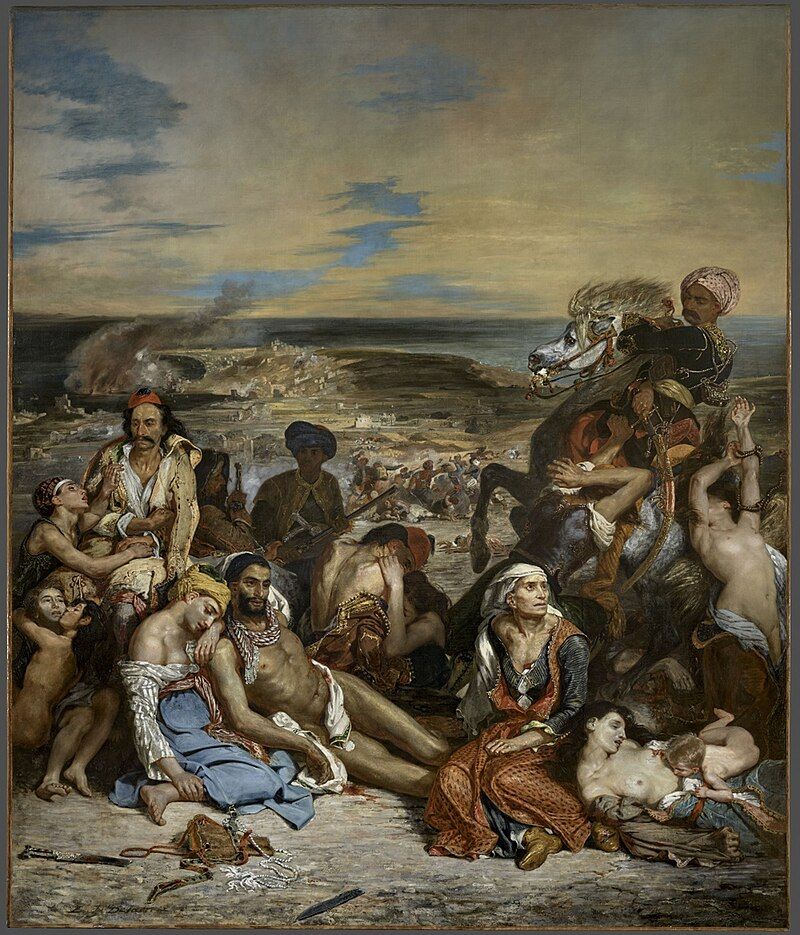 in 1822, ottoman soldiers murdered the people of chios, a (now) greek island. this because it was believed they helped greek rebels. delacroix talked to witnesses. he tried to highlight the suffering of the people by putting desperate figures in the front, and this is the main reason critics didn't like it. too much suffering. while gericault's raft of the medusa was praised and this also included a lot of suffering, but with the raft, there was hope. a small boat in the horizon. in the massacre, there was no hope at all. and critics didn't like reality, i suppose.
liberty leading the people
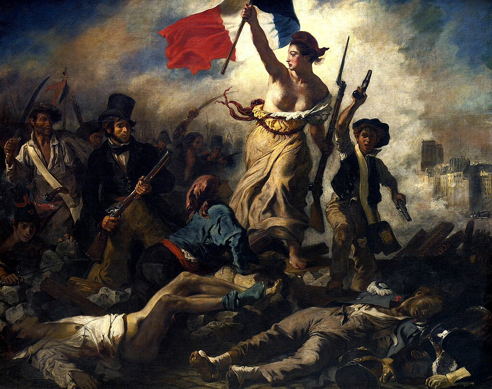 it's his most famous work and like i said maybe a bit overrated. it shows parisians and an allegory of freedom after the july revolution of 1830.
marianne, the personification of france, is wearing a phrygian cap to symbolise the goddess of liberty.
the composition is cool though, love me some triangles. it's said that victor hugo used the little boy as inspiration for a character in les miserables (no i don't know what character, i've never read it SORRY).
odalisque
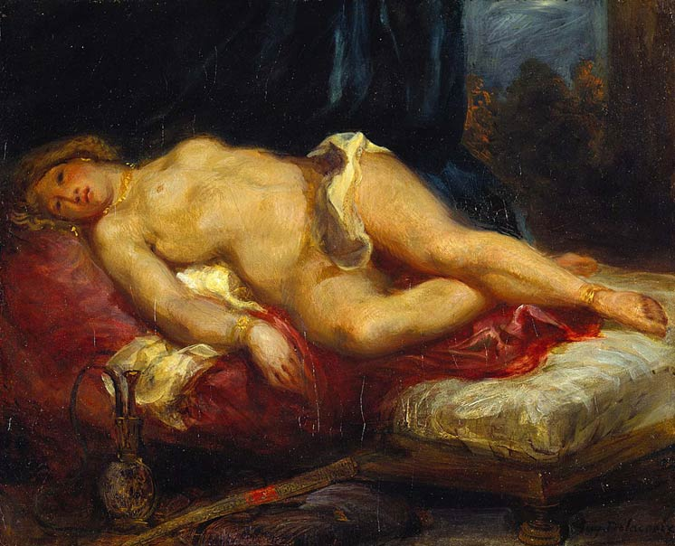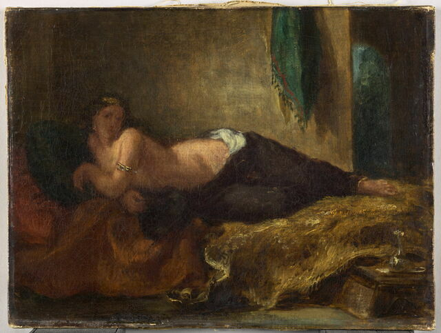 unlike some people (cough ingres cough), delacroix did visit north africa, as i mentioned in his biography. i'm sure it's because of this that his odalisques feel more human. with ingres's la grande odalisque i was watching a caricature. he used a french model and added some stereotypical elements and called it a day. delacroix painted what he had seen during his travels, and the results are amazing.
portrait of chopin & sand
 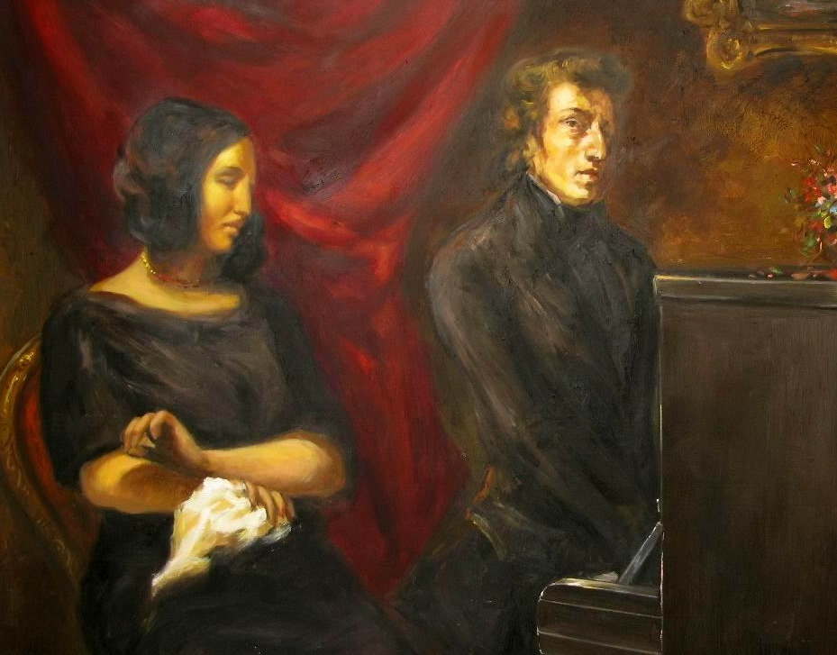
originally it was a double portrait of frederic chopin and george sand but later it was cut up and separately sold. the second picture is a reconstruction by an unknown artist.
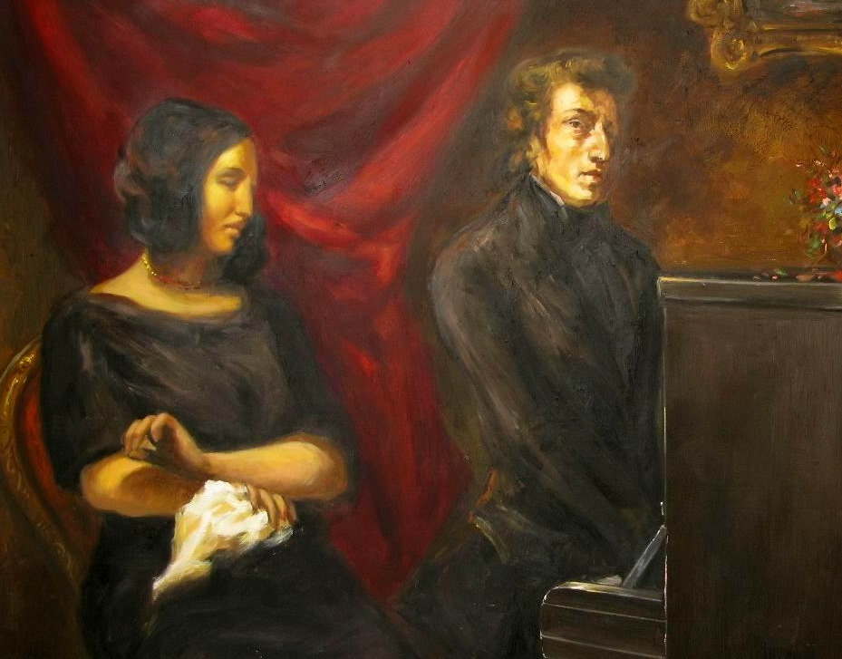
originally it was a double portrait of frederic chopin and george sand but later it was cut up and separately sold. the second picture is a reconstruction by an unknown artist.chopin is playing piano and sand is sewing. chopin and delacroix were introduced to eachother by sand and remained besties until chopin died. the portrait was never finished, so the reconstruction is more what it should've looked like.
goya
short biographyhe made a shit ton of works: about 700 paitings, 300 etches and 1000 drawings. he didn't get approved to go to the royal school of arts, but did become succesful as a genre painter in madrid and eventually became the court painter for charles III of spain.
in his forties he got ill and became deaf, aswell as temporarily blind and paralized. as a reaction on the french invasion he made his etch series the disasters of war.
nearing the end of his life he made the black paintings, a series of paintings directly painted on walls in his house. eventually, he left spain and lived in france until his death.
he made such an interesting evolution throughout the years and each and every one of his works is amazing. especially his black paintings are a source of inspiration for me personally! his brushwork and use of colour are wonderfulll.
his works
los caprichos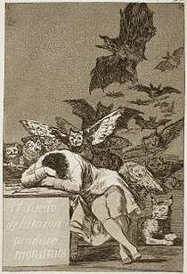 the etch pictured here is called "the sleep of reason produces monsters". it's the most famous of the los caprichos series.
gonna be honest i don't really understand this one. it's like what would happen if you repress reason too much?? which is strangely neoclassicist and we do NOT like neoclassicism on this page. anyways my coursebook said something like "in this work, a dark mix of satire and fantasy, the sleeping artist gets a frightening vision". which does not help me understand it at all. nonetheless, it's a really cool etch! the series consists of 80 etches.
the disasters of war
saturn devouring his son
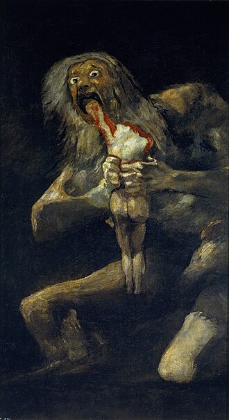 painted this one on the wall in his eating room (dining room?). my teacher described this as one of the scaries paintings ever but honestly i just really like it. the colors, the eyes!!! rubens also made a painting of this but it looked more like saturn was sucking the soul out or something. here, he is gnawing, blood streaming down, eyes wide.
this and the other black paintings were somehow transferred onto canvas after goya's death. a lot of the works are damaged now because of that. they were never meant to be seen by the public eye anyways.
mayas
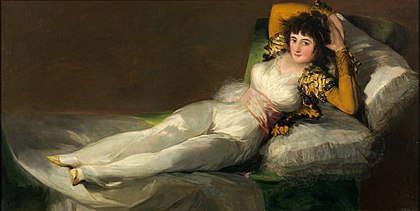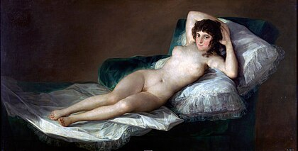 maya means fashionable woman apparently. spanish nude paintings are very rare because of catholicism. the inquisition (court of the catholic church) actually called goya before a tribunal to explain what the goal of this work was and who his client was.
both works were commissioned by a spanish minister and the woman pictured is most likely the duchess of alba.
the third of may, 1808
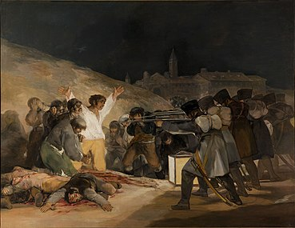 on the second of may, 1808, there was an uprising in madrid. the french occupiers managed to shut it down, and arrested random inhabitants and shot them.
after napoleon was expelled, the government started funding some artists to make works about this event.
for this painting, goya used brushes, palette knives and his fingers. the execution of the people was during the day, but for dramatic purposes it's night in the painting, the only light being the box in front of the french. like that, it's like there's an actual border between the two fronts and it makes the shadows long and spooky. the french are pictured anonymously, all from the back, as if they're one. the spanish people are pictured with individuality.
especially the man in white stands out. his arms are raised, he's on his knees as if he's begging and he has stigmata: all references to jesus, the symbol of prosecuted innocence.